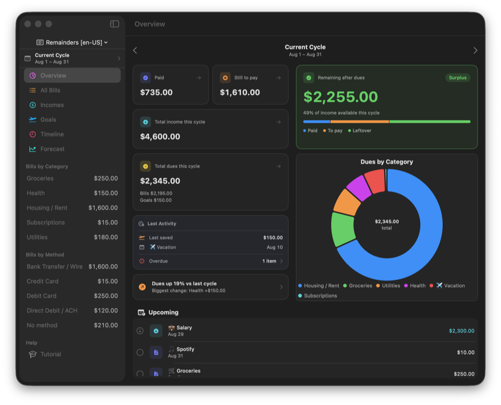
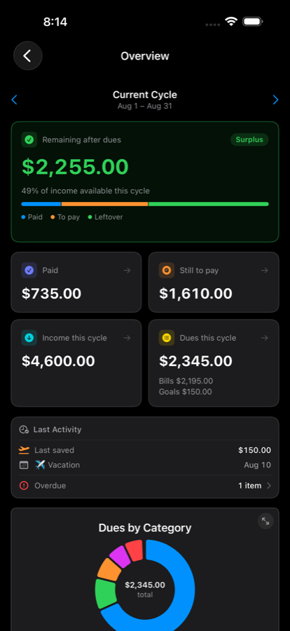
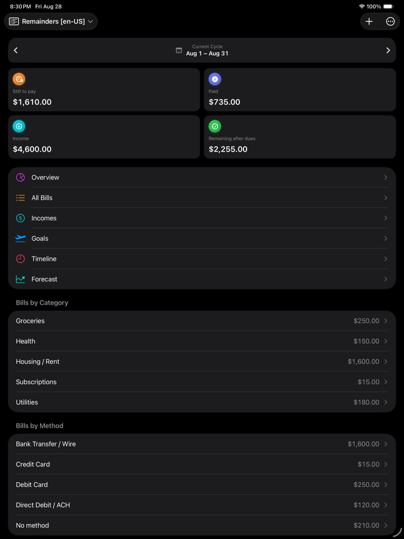

Remainders
Support & Privacy



Need help or have a question? Email remainders.support@icloud.com and we'll get back to you.
Remainders is a personal finance tracker built entirely on Apple Reminders. Below are answers to the most common questions.
Frequently Asked Questions
How does Remainders store my data?
Everything you add — bills, incomes, and goals — is saved as tasks in a dedicated list inside Apple's Reminders app. Remainders has no account, no servers, and no separate database. Your data lives in Reminders and syncs across your devices through your own iCloud, exactly like your other reminders. To remove all your Remainders data, delete its Reminders list.
Is my financial data private?
Yes. Remainders collects nothing. There's no login, no analytics, no advertising, and no third‑party services. Your information never leaves your device except through the iCloud sync you already use for Reminders (managed by Apple, not by us).
Why does the app need access to Reminders?
That's how it works — Remainders reads and writes your bills/incomes/goals as tasks in a Reminders list. It only touches the list you choose. You can revoke access anytime in Settings → Privacy & Security → Reminders.
I completed a recurring bill and the next one skipped a month. Why?
Recurring items use Reminders' own scheduling. When you complete a repeating bill, Reminders advances it to the next occurrence in the future. If you complete it after an occurrence's date has already passed, that occurrence is skipped. Tip: complete bills on time (the Overdue badge helps you spot ones that are due) to avoid skips.
If I un-check a completed recurring bill, why doesn't it come back as recurring?
When you complete a recurring bill, Reminders does two things at once: it marks that occurrence as done (a standalone, completed item) and it schedules the next occurrence of the series. So if you later un-check that completed item, it comes back as a single, one-time task — not a recurring one — because the recurring series has already moved on to its next date. You'll typically see your active recurring bill and this one-off; if you don't need the one-off, just delete it. This is how Apple's Reminders handles recurrence, and Remainders mirrors it.
What happens if I un-check a completed income or goal deposit?
An income returns to your active list as not received (same one-off behavior as above for recurring ones). For goals, completing an occurrence records a deposit — to undo it, delete that deposit from the goal's deposit history, which subtracts it from the saved total.
My amounts changed format after I switched region.
Currency, dates, and number formatting follow your device Region. When you change region, Remainders updates its entries to match your new format. This is expected — your values are unchanged, only the formatting.
Can I edit my bills directly in the Reminders app?
We recommend you don't: add, edit and delete everything in Remainders, and in Reminders only check off a bill, income, goal deposit, installment or statement when it's paid (right from its notification, for example). Remainders picks that up on every device. Each entry's value, installment number (like 3/10), card and settings live in its title and the [Remainders] line in its notes, so renaming, re‑dating or editing tasks in Reminders can break an entry, its installment plan or its statement. Tip: keep a Reminders list just for Remainders, so your personal reminders stay uncluttered. If something looks off, run Run Diagnosis in Settings.
Why are some rows dimmed and can't be checked off?
Those are projected future occurrences of your recurring bills/incomes — previews, not real tasks yet. They become real (and checkable) as their date arrives.
How do installment purchases work?
Choose Installments under Recurrence and type each installment's value or the purchase Total. Every installment becomes its own entry on its own month (TV 3/10), so each cycle shows exactly what's due. Change the date or the number of installments from any of them and the whole plan follows (paid ones stay where they were paid). Use Pay Ahead… to pay the next, the last, or all remaining installments today. Paid one by mistake? Mark it as unpaid and it goes back to its month. Deleting asks whether to remove every installment, only the unpaid ones (paid ones stay as history), or the entire plan.
How do credit card statements work?
Create a card with ＋ → New Card… (in Bills, on the iPhone Home screen, or in the Mac's File menu) and set its closing day and due day. Cards show a card icon in the sidebar; right-click one — or a statement — (on iPhone and iPad, long-press) to edit it, or Delete Card… to remove the card and everything paid with it. When you add a bill, pick the card in Card. A card is kept apart from regular payment methods, even one with the same name, and bills don't move between a card and a regular method. From then on, everything paid with that card goes in its statements: Bills shows one row per statement — open it to see the purchases, installments and subscriptions inside. A purchase gets a purchase date (one on the closing day goes in the next statement) and stays off your notifications; the statement is one Reminders task on its due date. Check each purchase or subscription as you pay it (handy if you pay the card ahead) and what's left shows as still to pay; or mark the whole statement as paid. When every line is paid, so is the statement; a purchase added later reopens it with just what's left. Installments go one per statement, and Pay Ahead… moves them into the open statement. Subscriptions keep their own charge day (and its reminder) and are paid like any other line. Filters and search narrow what's shown inside each statement, and charts still split spending by category.
Where can I see all my bills, incomes and goals at once?
In All Entries. It lists everything in one place: History (paid, received, deposited), Active (still open), and Projected (future occurrences). Use Search, or the Filter — by type, recurrence, category, source, method, overdue, or a date range — to find anything.
How do filters and search work?
Tap or click Filter at the bottom of a list and pick options in each section (recurrence, category, method, status, date…). Several options in one section show any of them; options in different sections must all match. Switch the chips' toggle to Hide to leave your picks out instead — a quick what‑if, like your month without subscriptions. While you type in Search, matching filters are suggested (type “paid” or a card's name) and tapping one adds it as a chip. The charts follow your filters too. Tip: tap the overdue banner to see just what's late.
What does Forecast count?
Everything still to come from today until the end of the window you pick (3 months to 2 years): unpaid bills, goal deposits, and incomes — real or projected. Net = incoming − bills − goal deposits. The Net Balance chart starts at zero today and ends at that same Net. Tap a row to see each of its dates and amounts; Filter and Search narrow both the list and the chart.
How do billing cycles work?
A billing cycle is the window Remainders groups everything into (monthly, weekly, every 2 weeks, every 15 days, or a custom interval). Set it to match your payday. It drives what's still to pay before your next income, what's overdue, and what remains after your dues.
When do notifications arrive?
Notifications are delivered by the Reminders app. By default you're alerted at 9:00 AM on the due date; set a custom time per entry if you prefer.
Does it work on all my devices?
Yes — because your data is in Reminders + iCloud, it syncs to your iPhone, iPad, and Mac automatically. The widget shows your current cycle at a glance.
The widget looks out of date.
Widgets refresh periodically. Open the app once to force a refresh, or remove and re‑add the widget if it still looks stale.
Does Remainders depend on Apple's Reminders?
Yes. Remainders is built on Apple's EventKit framework and the Reminders app, which are provided and maintained by Apple. Storing your data, syncing it across devices (via iCloud), scheduling recurrence, and delivering notifications are all handled by Reminders/iCloud — not by Remainders. If Apple changes how those work, or if Reminders or iCloud sync has a hiccup, it can affect the app. We keep Remainders updated to work smoothly with the latest system versions.
What's New
Version 1.2
- Installment purchases: each installment is its own entry on its own month (TV 3/10), with Pay ahead and safe delete options.
- Credit card statements: set a card's closing and due day, and its purchases, installments and subscriptions go in one statement per month — one row and one reminder; pay it line by line or all at once.
- A new Filter in every list: recurrence, category, source, method, status, overdue and dates — show only your picks or hide them, with removable chips. Search suggests matching filters as you type.
- “All Bills” is now Bills, and “Timeline” is now All Entries — everything in one place, with filters and a date range.
- Rebuilt Forecast: counts what's still to come from today (up to 2 years), shows goal deposits separately, adds a Net Balance chart, and opens any row's dates.
- Tidier lists: paid and received items fold away, tap the overdue banner to see what's late, swipe left to edit, and act on several items at once from the side panel.
- Incomes and Goals work like Bills: a % received ring, folded Received section, confirmed deletes, and Delete Goal in the editor.
- A Chart view in Bills (now on iPhone too), clearer donut cards in the iPhone Overview, smooth animations, and many refinements.
Version 1.1 — October 2026
- Optimized for iPhone Duo: unfolded, see your list and the editor side by side; folded, everything fits the outer screen — and you stay on the same screen when you fold or unfold.
- Edit bills, incomes and goals in a side panel on Mac, iPad, iPhone Duo, and Pro Max and Plus iPhones in landscape — select one to see its status, mark it paid and edit it in place, then close it with one tap or click.
- New “Where Your Income Goes” chart in Overview, showing what's left after your bills.
- More accurate Forecast: goal deposits stop once a goal is fully funded.
- Your Remainders lists now appear first when choosing a list.
- Run Diagnosis helps you check Reminders notifications.
- Siri and Shortcuts now understand Portuguese and Spanish.
- Double-click to edit on Mac, a refreshed Liquid Glass look, plus many refinements and fixes.
Version 1.0.1 — October 2026
Fixed the totals shown next to each category and payment method, which could include bills from other cycles. They now match the current cycle.
Version 1.0 — October 13, 2026
First release of Remainders for iPhone, iPad, and Mac.
Privacy Policy
Effective date: September 2026
Remainders ("the app") is designed to be private by default.
- No data collection. We do not collect, transmit, sell, or share any personal or financial information. The app has no accounts and no servers operated by us.
- Where your data lives. All content you create is stored as tasks in Apple's Reminders app on your device and synced via your personal iCloud account (governed by Apple's Privacy Policy). We have no access to it.
- Permissions. The app requests access to Reminders solely to read and write the bills, incomes, and goals you enter. You can revoke this anytime in system Settings.
- No tracking or ads. The app contains no analytics, no advertising, and no third‑party tracking SDKs.
- Children. The app does not knowingly collect any data from anyone, including children.
If you have any questions about privacy, contact remainders.support@icloud.com.
Disclaimer
Remainders relies on Apple's Reminders app, the EventKit framework, and iCloud to store your data, sync it across devices, schedule recurring items, and deliver notifications. These services are provided and controlled by Apple. Remainders is not responsible for data loss, sync delays or conflicts, missed or duplicated notifications, or other issues caused by Apple's services, iCloud, or changes to iOS, iPadOS, or macOS. For anything important, please keep your own separate records.
Precisa de ajuda ou tem uma dúvida? Envie um e-mail para remainders.support@icloud.com e responderemos.
O Remainders é um app de finanças pessoais construído inteiramente sobre o app Lembretes da Apple. Abaixo estão as respostas para as perguntas mais comuns.
Perguntas frequentes
Como o Remainders guarda meus dados?
Tudo o que você adiciona — contas, receitas e metas — é salvo como tarefas em uma lista dedicada dentro do app Lembretes da Apple. O Remainders não tem conta, servidores nem banco de dados próprio. Seus dados ficam no Lembretes e sincronizam entre seus aparelhos pelo seu próprio iCloud, igual aos seus outros lembretes. Para remover todos os seus dados do Remainders, exclua a lista dele no Lembretes.
Meus dados financeiros são privados?
Sim. O Remainders não coleta nada. Não há login, análises, publicidade nem serviços de terceiros. Suas informações nunca saem do seu aparelho, exceto pela sincronização do iCloud que você já usa no Lembretes (gerenciada pela Apple, não por nós).
Por que o app precisa de acesso ao Lembretes?
É assim que ele funciona — o Remainders lê e escreve suas contas/receitas/metas como tarefas em uma lista do Lembretes. Ele só mexe na lista que você escolher. Você pode revogar o acesso a qualquer momento em Ajustes → Privacidade e Segurança → Lembretes.
Concluí uma conta recorrente e a próxima pulou um mês. Por quê?
Os itens recorrentes usam o agendamento do próprio Lembretes. Quando você conclui uma conta que se repete, o Lembretes avança para a próxima ocorrência no futuro. Se você concluir depois que a data de uma ocorrência já passou, essa ocorrência é pulada. Dica: conclua as contas em dia (o selo Em atraso ajuda a identificar as vencidas) para evitar pulos.
Se eu desmarcar uma conta recorrente concluída, por que ela não volta como recorrente?
Quando você conclui uma conta recorrente, o Lembretes faz duas coisas ao mesmo tempo: marca aquela ocorrência como concluída (um item avulso) e agenda a próxima ocorrência da série. Então, se depois você desmarcar aquele item concluído, ele volta como uma tarefa única — não recorrente — porque a série recorrente já avançou para a próxima data. Você normalmente verá sua conta recorrente ativa e essa avulsa; se não precisar da avulsa, é só excluí-la. É assim que o Lembretes da Apple lida com recorrência, e o Remainders faz igual.
E se eu desmarcar uma receita concluída ou um depósito de meta?
Uma receita volta para sua lista ativa como não recebida (com o mesmo comportamento de tarefa única acima, no caso das recorrentes). Para metas, concluir uma ocorrência registra um depósito — para desfazer, exclua esse depósito do histórico de depósitos da meta, o que o subtrai do total guardado.
Meus valores mudaram de formato depois que troquei a região.
A moeda, as datas e a formatação de números seguem a Região do seu aparelho. Quando você muda de região, o Remainders atualiza seus registros para o novo formato. Isso é esperado — seus valores não mudam, apenas a formatação.
Posso editar minhas contas direto no app Lembretes?
Recomendamos que não: crie, edite e apague tudo no Remainders, e no Lembretes apenas marque como concluída uma conta, receita, depósito de meta, parcela ou fatura quando for paga (direto da notificação, por exemplo). O Remainders capta isso em todos os aparelhos. O valor, o número da parcela (como 3/10), o cartão e os ajustes de cada registro ficam no título e na linha [Remainders] das notas, então renomear, mudar a data ou editar tarefas no Lembretes pode quebrar um registro, seu parcelamento ou sua fatura. Dica: use uma lista do Lembretes só para o Remainders, para que seus lembretes pessoais não fiquem lotados. Se algo parecer errado, execute Executar diagnóstico nos Ajustes.
Por que algumas linhas ficam esmaecidas e não podem ser marcadas?
São ocorrências futuras projetadas das suas contas/receitas recorrentes — prévias, ainda não são tarefas reais. Elas se tornam reais (e marcáveis) conforme a data chega.
Como funcionam as compras parceladas?
Escolha Parcelada em Recorrência e digite o valor de cada parcela ou o Total da compra. Cada parcela vira um lançamento no seu próprio mês (TV 3/10), então cada ciclo mostra exatamente o que vence nele. Mude a data ou o número de parcelas em qualquer uma delas e o plano inteiro acompanha (as pagas ficam onde foram pagas). Use Antecipar… para pagar hoje as próximas, as últimas ou todas as parcelas restantes. Pagou uma por engano? Marque como não paga e ela volta para o seu mês. Ao excluir, você escolhe apagar todas as parcelas, só as não pagas (as pagas ficam no histórico) ou o parcelamento inteiro.
Como funcionam as faturas do cartão de crédito?
Crie um cartão com ＋ → Novo cartão… (em Contas, na tela Início do iPhone ou no menu Arquivo do Mac) e defina o dia do fechamento e o dia do vencimento. Os cartões aparecem com um ícone de cartão na barra lateral; clique com o botão direito num cartão — ou numa fatura — (no iPhone e iPad, toque e segure) para editar ou Apagar cartão…, que remove o cartão e tudo o que foi pago com ele. Ao lançar uma conta, escolha o cartão em Cartão. O cartão fica separado das formas de pagamento comuns, mesmo de uma com o mesmo nome, e contas não mudam entre um cartão e uma forma de pagamento comum. A partir daí, tudo o que for pago com esse cartão entra nas faturas: Contas mostra uma linha por fatura — abra para ver as compras, parcelas e assinaturas dentro dela. Cada compra tem uma data da compra (no dia do fechamento, entra na próxima fatura) e não gera notificações; a fatura é uma tarefa do Lembretes no vencimento. Marque cada compra ou assinatura conforme paga (útil para quem antecipa o pagamento do cartão) e o que falta aparece como a pagar; ou marque a fatura inteira como paga. Com todos os itens pagos, a fatura fica paga; uma compra lançada depois a reabre só com o que falta. As parcelas entram uma por fatura, e Antecipar… leva parcelas para a fatura aberta. Assinaturas mantêm o dia da cobrança (e o lembrete dele) e são pagas como qualquer outro item. Filtros e busca restringem o que aparece dentro de cada fatura, e os gráficos continuam separando os gastos por categoria.
Onde vejo todas as minhas contas, receitas e metas de uma vez?
Em Todos os lançamentos. Ali fica tudo num só lugar: Histórico (pagos, recebidos, depositados), Ativos (em aberto) e Projetados (ocorrências futuras). Use a Busca ou o Filtro — por tipo, recorrência, categoria, fonte, forma de pagamento, atraso ou período — para encontrar qualquer coisa.
Como funcionam os filtros e a busca?
Toque ou clique em Filtrar, embaixo de uma lista, e escolha opções em cada seção (recorrência, categoria, forma de pagamento, status, data…). Várias opções na mesma seção mostram qualquer uma delas; opções de seções diferentes precisam valer todas. Mude o seletor das etiquetas para Ocultar para deixar suas escolhas de fora — uma simulação rápida, como o seu mês sem assinaturas. Enquanto você digita na Busca, filtros correspondentes são sugeridos (digite “pagas” ou o nome de um cartão) e tocar num deles o adiciona como etiqueta. Os gráficos também seguem seus filtros. Dica: toque no aviso de vencidas para ver só o que está atrasado.
O que a Previsão soma?
Tudo o que ainda vem, de hoje até o fim do período que você escolher (de 3 meses a 2 anos): contas não pagas, depósitos em metas e receitas — reais ou projetados. Saldo = entradas − contas − depósitos em metas. O gráfico Saldo projetado começa em zero hoje e termina nesse mesmo saldo. Toque numa linha para ver cada data e valor; o Filtro e a Busca reduzem tanto a lista quanto o gráfico.
Como funcionam os ciclos de cobrança?
Um ciclo de cobrança é a janela em que o Remainders agrupa tudo (mensal, semanal, a cada 2 semanas, a cada 15 dias ou um intervalo personalizado). Configure-o para coincidir com o seu pagamento. Ele determina quanto ainda falta pagar antes da próxima receita, o que está em atraso e quanto sobra depois das contas.
Quando as notificações chegam?
As notificações são entregues pelo app Lembretes. Por padrão, você é avisado às 9:00 na data de vencimento; defina um horário personalizado por registro, se preferir.
Funciona em todos os meus aparelhos?
Sim — como seus dados ficam no Lembretes + iCloud, eles sincronizam automaticamente no seu iPhone, iPad e Mac. O widget mostra o ciclo atual num relance.
O widget parece desatualizado.
Os widgets atualizam periodicamente. Abra o app uma vez para forçar a atualização, ou remova e adicione o widget de novo se ainda parecer desatualizado.
O Remainders depende do Lembretes da Apple?
Sim. O Remainders é construído sobre o framework EventKit da Apple e o app Lembretes, que são fornecidos e mantidos pela Apple. Guardar seus dados, sincronizá-los entre aparelhos (via iCloud), agendar recorrências e entregar notificações são feitos pelo Lembretes/iCloud — não pelo Remainders. Se a Apple mudar como isso funciona, ou se o Lembretes ou o iCloud tiverem algum problema, isso pode afetar o app. Mantemos o Remainders atualizado para funcionar bem com as versões mais recentes do sistema.
Novidades
Versão 1.2
- Compras parceladas: cada parcela é um lançamento no seu próprio mês (TV 3/10), com Antecipar e opções seguras de exclusão.
- Faturas do cartão de crédito: defina o fechamento e o vencimento do cartão, e as compras, parcelas e assinaturas entram em uma fatura por mês — uma linha e um lembrete; pague item por item ou tudo de uma vez.
- Novo Filtro em todas as listas: recorrência, categoria, fonte, forma de pagamento, status, atraso e datas — mostre só suas escolhas ou oculte-as, com etiquetas removíveis. A Busca sugere filtros enquanto você digita.
- “Todas as contas” agora é Contas, e “Todos os registros” agora é Todos os lançamentos — tudo num só lugar, com filtros e período.
- Previsão refeita: soma o que ainda vem a partir de hoje (até 2 anos), mostra os depósitos em metas à parte, ganha um gráfico de Saldo projetado e abre as datas de qualquer linha.
- Listas mais organizadas: itens pagos e recebidos ficam recolhidos, toque no aviso de vencidas para ver o que está atrasado, deslize para a esquerda para editar e aja em vários itens de uma vez pelo painel lateral.
- Receitas e Metas funcionam como Contas: anel de % recebido, seção Recebidas recolhida, exclusões confirmadas e Excluir meta no editor.
- Visualização em gráfico em Contas (agora também no iPhone), cartões de gráficos mais claros na Visão geral do iPhone, animações suaves e muitos ajustes.
Versão 1.1 — outubro de 2026
- Otimizado para o iPhone Duo: aberto, veja sua lista e o editor lado a lado; fechado, tudo cabe na tela externa — e você continua na mesma tela ao abrir ou fechar.
- Edite contas, receitas e metas em um painel lateral no Mac, no iPad, no iPhone Duo e nos iPhones Pro Max e Plus na horizontal — selecione uma para ver o status, marcá-la como paga e editá-la ali mesmo, e feche com um toque ou clique.
- Novo gráfico “Para onde vai sua receita” na Visão geral, mostrando o que sobra depois das contas.
- Previsão mais precisa: os depósitos de uma meta param quando ela é alcançada.
- Suas listas do Remainders agora aparecem primeiro na escolha de lista.
- O Diagnóstico ajuda a verificar as notificações do Lembretes.
- A Siri e os Atalhos agora entendem português e espanhol.
- Clique duas vezes para editar no Mac, novo visual em Liquid Glass, além de vários ajustes e correções.
Versão 1.0.1 — outubro de 2026
Corrigimos os totais exibidos ao lado de cada categoria e forma de pagamento, que podiam incluir contas de outros ciclos. Agora eles correspondem ao ciclo atual.
Versão 1.0 — 13 de outubro de 2026
Primeira versão do Remainders para iPhone, iPad e Mac.
Política de Privacidade
Data de vigência: Setembro de 2026
O Remainders ("o app") foi projetado para ser privado por padrão.
- Sem coleta de dados. Não coletamos, transmitimos, vendemos nem compartilhamos nenhuma informação pessoal ou financeira. O app não tem contas nem servidores operados por nós.
- Onde seus dados ficam. Todo o conteúdo que você cria é guardado como tarefas no app Lembretes da Apple, no seu aparelho, e sincronizado pela sua conta pessoal do iCloud (regida pela Política de Privacidade da Apple). Nós não temos acesso a ele.
- Permissões. O app solicita acesso ao Lembretes apenas para ler e escrever as contas, receitas e metas que você insere. Você pode revogar isso a qualquer momento nos Ajustes do sistema.
- Sem rastreamento ou anúncios. O app não contém análises, publicidade nem SDKs de rastreamento de terceiros.
- Crianças. O app não coleta intencionalmente dados de ninguém, incluindo crianças.
Se tiver dúvidas sobre privacidade, entre em contato: remainders.support@icloud.com.
Aviso legal
O Remainders depende do app Lembretes, do framework EventKit e do iCloud da Apple para guardar seus dados, sincronizá-los entre aparelhos, agendar itens recorrentes e entregar notificações. Esses serviços são fornecidos e controlados pela Apple. O Remainders não se responsabiliza por perda de dados, atrasos ou conflitos de sincronização, notificações não entregues ou duplicadas, ou outros problemas causados pelos serviços da Apple, pelo iCloud ou por mudanças no iOS, iPadOS ou macOS. Para qualquer coisa importante, mantenha seus próprios registros à parte.
¿Necesitas ayuda o tienes una pregunta? Escribe a remainders.support@icloud.com y te responderemos.
Remainders es un gestor de finanzas personales creado por completo sobre la app Recordatorios de Apple. A continuación tienes las respuestas a las preguntas más frecuentes.
Preguntas frecuentes
¿Cómo guarda Remainders mis datos?
Todo lo que añades — cuentas, ingresos y metas — se guarda como tareas en una lista dedicada dentro de la app Recordatorios de Apple. Remainders no tiene cuenta, servidores ni base de datos propia. Tus datos viven en Recordatorios y se sincronizan entre tus dispositivos a través de tu propio iCloud, igual que tus demás recordatorios. Para eliminar todos tus datos de Remainders, borra su lista en Recordatorios.
¿Mis datos financieros son privados?
Sí. Remainders no recopila nada. No hay inicio de sesión, analíticas, publicidad ni servicios de terceros. Tu información nunca sale de tu dispositivo, salvo por la sincronización de iCloud que ya usas en Recordatorios (gestionada por Apple, no por nosotros).
¿Por qué la app necesita acceso a Recordatorios?
Así es como funciona: Remainders lee y escribe tus cuentas/ingresos/metas como tareas en una lista de Recordatorios. Solo toca la lista que elijas. Puedes revocar el acceso cuando quieras en Ajustes → Privacidad y seguridad → Recordatorios.
Completé una cuenta recurrente y la siguiente se saltó un mes. ¿Por qué?
Los elementos recurrentes usan la programación de la propia app Recordatorios. Cuando completas una cuenta que se repite, Recordatorios avanza a la próxima ocurrencia en el futuro. Si la completas después de que la fecha de una ocurrencia ya pasó, esa ocurrencia se omite. Consejo: completa las cuentas a tiempo (la etiqueta Vencido ayuda a detectar las que tocan) para evitar saltos.
Si desmarco una cuenta recurrente completada, ¿por qué no vuelve como recurrente?
Cuando completas una cuenta recurrente, Recordatorios hace dos cosas a la vez: marca esa ocurrencia como hecha (un elemento independiente) y programa la próxima ocurrencia de la serie. Así que si luego desmarcas ese elemento completado, vuelve como una tarea única — no recurrente — porque la serie recurrente ya avanzó a su siguiente fecha. Normalmente verás tu cuenta recurrente activa y esta suelta; si no necesitas la suelta, solo bórrala. Así es como la app Recordatorios de Apple maneja la recurrencia, y Remainders hace lo mismo.
¿Qué pasa si desmarco un ingreso completado o un depósito de una meta?
Un ingreso vuelve a tu lista activa como no recibido (con el mismo comportamiento de tarea única de arriba en el caso de los recurrentes). Para las metas, completar una ocurrencia registra un depósito — para deshacerlo, elimina ese depósito del historial de depósitos de la meta, lo que lo resta del total ahorrado.
Mis importes cambiaron de formato tras cambiar la región.
La moneda, las fechas y el formato de números siguen la Región de tu dispositivo. Cuando cambias de región, Remainders actualiza sus registros al nuevo formato. Es lo esperado — tus valores no cambian, solo el formato.
¿Puedo editar mis cuentas directamente en la app Recordatorios?
Te recomendamos que no: crea, edita y elimina todo en Remainders, y en Recordatorios solo marca como completada una cuenta, ingreso, depósito de meta, cuota o estado de cuenta cuando esté pagado (desde su aviso, por ejemplo). Remainders lo capta en todos tus dispositivos. El valor, el número de cuota (como 3/10), la tarjeta y los ajustes de cada registro están en su título y en la línea [Remainders] de sus notas, así que renombrar, cambiar la fecha o editar tareas en Recordatorios puede romper un registro, su plan de cuotas o su estado de cuenta. Consejo: usa una lista de Recordatorios solo para Remainders, así tus recordatorios personales no se llenan. Si algo parece mal, ejecuta Ejecutar diagnóstico en Ajustes.
¿Por qué algunas filas están atenuadas y no se pueden marcar?
Son ocurrencias futuras proyectadas de tus cuentas/ingresos recurrentes — vistas previas, aún no son tareas reales. Se vuelven reales (y marcables) a medida que llega su fecha.
¿Cómo funcionan las compras en cuotas?
Elige En cuotas en Recurrencia y escribe el valor de cada cuota o el Total de la compra. Cada cuota se convierte en un movimiento en su propio mes (TV 3/10), así que cada ciclo muestra exactamente lo que vence en él. Cambia la fecha o el número de cuotas desde cualquiera de ellas y todo el plan se ajusta (las pagadas se quedan donde se pagaron). Usa Adelantar… para pagar hoy las próximas, las últimas o todas las cuotas restantes. ¿Pagaste una por error? Márcala como no pagada y vuelve a su mes. Al eliminar, eliges borrar todas las cuotas, solo las no pagadas (las pagadas quedan en el historial) o el plan entero.
¿Cómo funcionan los estados de cuenta de la tarjeta de crédito?
Crea una tarjeta con ＋ → Nueva tarjeta… (en Cuentas, en la pantalla Inicio del iPhone o en el menú Archivo del Mac) y define el día de cierre y el día de vencimiento. Las tarjetas muestran un ícono de tarjeta en la barra lateral; haz clic derecho en una tarjeta —o en un estado de cuenta— (en iPhone y iPad, mantén pulsado) para editarla o Eliminar tarjeta…, que borra la tarjeta y todo lo pagado con ella. Al añadir una factura, elige la tarjeta en Tarjeta. La tarjeta queda separada de los métodos de pago comunes, incluso de uno con el mismo nombre, y las facturas no pasan entre una tarjeta y un método común. Desde entonces, todo lo que pagues con esa tarjeta entra en sus estados de cuenta: Cuentas muestra una fila por estado de cuenta — ábrela para ver las compras, cuotas y suscripciones que contiene. Cada compra tiene una fecha de compra (si es el día de cierre, entra en el siguiente) y no genera avisos; el estado de cuenta es una tarea de Recordatorios en su vencimiento. Marca cada compra o suscripción a medida que la pagas (útil si adelantas el pago de la tarjeta) y lo que falta aparece como por pagar; o marca todo el estado de cuenta como pagado. Con todas las líneas pagadas, el estado de cuenta queda pagado; una compra añadida después lo reabre solo con lo que falta. Las cuotas van una por estado de cuenta, y Adelantar… las lleva al estado de cuenta abierto. Las suscripciones conservan su día de cargo (y su recordatorio) y se pagan como cualquier otra línea. Los filtros y la búsqueda acotan lo que se ve dentro de cada uno, y los gráficos siguen separando el gasto por categoría.
¿Dónde veo todas mis cuentas, ingresos y metas a la vez?
En Todos los movimientos. Ahí está todo en un solo lugar: Historial (pagados, recibidos, depositados), Activos (pendientes) y Proyectados (ocurrencias futuras). Usa la Búsqueda o el Filtro — por tipo, recurrencia, categoría, fuente, método, vencidos o un período — para encontrar cualquier cosa.
¿Cómo funcionan los filtros y la búsqueda?
Toca o haz clic en Filtrar, abajo de una lista, y elige opciones en cada sección (recurrencia, categoría, método, estado, fecha…). Varias opciones en una sección muestran cualquiera de ellas; las de secciones distintas deben cumplirse todas. Cambia el selector de las etiquetas a Ocultar para dejar fuera lo elegido — una simulación rápida, como tu mes sin suscripciones. Mientras escribes en Buscar, se sugieren los filtros que coinciden (escribe “pagadas” o el nombre de una tarjeta) y al tocar uno se añade como etiqueta. Los gráficos también siguen tus filtros. Consejo: toca el aviso de vencidas para ver solo lo atrasado.
¿Qué suma la Previsión?
Todo lo que está por venir desde hoy hasta el final del período que elijas (de 3 meses a 2 años): cuentas sin pagar, depósitos en metas e ingresos — reales o proyectados. Saldo = entradas − cuentas − depósitos en metas. El gráfico Saldo proyectado empieza en cero hoy y termina en ese mismo saldo. Toca una fila para ver cada fecha e importe; el Filtro y la Búsqueda acotan tanto la lista como el gráfico.
¿Cómo funcionan los ciclos de facturación?
Un ciclo de facturación es la ventana en la que Remainders agrupa todo (mensual, semanal, cada 2 semanas, cada 15 días o un intervalo personalizado). Ajústalo para que coincida con tu día de pago. Determina cuánto queda por pagar antes de tu próximo ingreso, qué está vencido y cuánto queda después de tus pagos.
¿Cuándo llegan las notificaciones?
Las notificaciones las entrega la app Recordatorios. Por defecto se te avisa a las 9:00 en la fecha de vencimiento; define una hora personalizada por registro si lo prefieres.
¿Funciona en todos mis dispositivos?
Sí — como tus datos están en Recordatorios + iCloud, se sincronizan automáticamente en tu iPhone, iPad y Mac. El widget muestra el ciclo actual de un vistazo.
El widget parece desactualizado.
Los widgets se actualizan periódicamente. Abre la app una vez para forzar la actualización, o quita y vuelve a añadir el widget si sigue desactualizado.
¿Remainders depende de la app Recordatorios de Apple?
Sí. Remainders está construido sobre el framework EventKit de Apple y la app Recordatorios, que son proporcionados y mantenidos por Apple. Guardar tus datos, sincronizarlos entre dispositivos (vía iCloud), programar recurrencias y entregar notificaciones lo hace Recordatorios/iCloud — no Remainders. Si Apple cambia cómo funciona eso, o si Recordatorios o iCloud tienen algún problema, puede afectar a la app. Mantenemos Remainders actualizado para funcionar bien con las versiones más recientes del sistema.
Novedades
Versión 1.2
- Compras en cuotas: cada cuota es un movimiento en su propio mes (TV 3/10), con Adelantar y opciones seguras para eliminar.
- Estados de cuenta de la tarjeta: define el cierre y el vencimiento de la tarjeta, y sus compras, cuotas y suscripciones entran en un estado de cuenta por mes — una fila y un recordatorio; págalo línea por línea o todo de una vez.
- Un nuevo Filtro en todas las listas: recurrencia, categoría, fuente, método, estado, vencidos y fechas — muestra solo lo elegido u ocúltalo, con etiquetas que se pueden quitar. La Búsqueda sugiere filtros mientras escribes.
- “Todas las cuentas” ahora es Cuentas, y “Todos los registros” ahora es Todos los movimientos — todo en un solo lugar, con filtros y período.
- Previsión renovada: suma lo que está por venir desde hoy (hasta 2 años), muestra aparte los depósitos en metas, añade un gráfico de Saldo proyectado y abre las fechas de cualquier fila.
- Listas más ordenadas: lo pagado y recibido se pliega, toca el aviso de vencidas para ver lo atrasado, desliza a la izquierda para editar y actúa sobre varios elementos a la vez desde el panel lateral.
- Ingresos y Metas funcionan como Cuentas: anillo de % recibido, sección Recibidos plegada, eliminaciones confirmadas y Eliminar meta en el editor.
- Vista de gráfico en Cuentas (ahora también en iPhone), tarjetas de gráficos más claras en el Resumen del iPhone, animaciones suaves y muchas mejoras.
Versión 1.1 — octubre de 2026
- Optimizado para iPhone Duo: abierto, ve tu lista y el editor lado a lado; cerrado, todo cabe en la pantalla exterior — y sigues en la misma pantalla al abrirlo o cerrarlo.
- Edita cuentas, ingresos y metas en un panel lateral en Mac, iPad, iPhone Duo y los iPhone Pro Max y Plus en horizontal: selecciona una para ver su estado, marcarla como pagada y editarla ahí mismo, y ciérralo con un toque o clic.
- Nuevo gráfico “A dónde va tu ingreso” en el Resumen, que muestra lo que queda después de tus cuentas.
- Previsión más precisa: los depósitos de una meta se detienen cuando se alcanza.
- Tus listas de Remainders ahora aparecen primero al elegir una lista.
- El Diagnóstico te ayuda a revisar las notificaciones de Recordatorios.
- Siri y Atajos ahora entienden portugués y español.
- Doble clic para editar en Mac, nuevo aspecto Liquid Glass, además de muchas mejoras y correcciones.
Versión 1.0.1 — octubre de 2026
Corregimos los totales que se muestran junto a cada categoría y método de pago, que podían incluir facturas de otros ciclos. Ahora coinciden con el ciclo actual.
Versión 1.0 — 13 de octubre de 2026
Primera versión de Remainders para iPhone, iPad y Mac.
Política de Privacidad
Fecha de entrada en vigor: Septiembre de 2026
Remainders ("la app") está diseñado para ser privado por defecto.
- Sin recopilación de datos. No recopilamos, transmitimos, vendemos ni compartimos ninguna información personal o financiera. La app no tiene cuentas ni servidores operados por nosotros.
- Dónde viven tus datos. Todo el contenido que creas se guarda como tareas en la app Recordatorios de Apple, en tu dispositivo, y se sincroniza mediante tu cuenta personal de iCloud (regida por la Política de Privacidad de Apple). No tenemos acceso a él.
- Permisos. La app solicita acceso a Recordatorios únicamente para leer y escribir las cuentas, ingresos y metas que introduces. Puedes revocarlo cuando quieras en los Ajustes del sistema.
- Sin seguimiento ni anuncios. La app no contiene analíticas, publicidad ni SDK de seguimiento de terceros.
- Menores. La app no recopila datos de nadie de forma intencional, incluidos los menores.
Si tienes preguntas sobre privacidad, contáctanos: remainders.support@icloud.com.
Aviso legal
Remainders depende de la app Recordatorios, del framework EventKit y de iCloud de Apple para guardar tus datos, sincronizarlos entre dispositivos, programar elementos recurrentes y entregar notificaciones. Estos servicios son proporcionados y controlados por Apple. Remainders no se responsabiliza de la pérdida de datos, retrasos o conflictos de sincronización, notificaciones no entregadas o duplicadas, u otros problemas causados por los servicios de Apple, iCloud o cambios en iOS, iPadOS o macOS. Para cualquier cosa importante, guarda tus propios registros aparte.